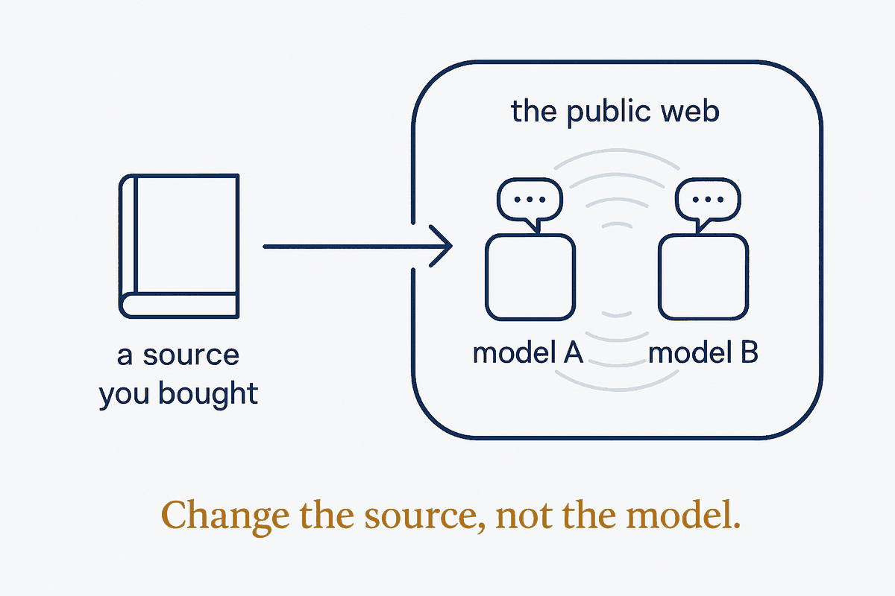

Public AI models answer from the same public web, so they repeat each other. A source you bought — a recent guidebook, a paid report, your own documents — is one they have never read. Feeding it in breaks the echo instead of adding a third voice to it.

Ask two AI assistants about a town you are about to visit and you mostly get the same answer twice. They read the same public web: the same review sites, the same listicles, the same old forum threads. When that material is wrong or out of date, both are wrong together (see One Witness, Not Two).
A third model does not fix that. A different source does. A recent guidebook you bought, a park booklet, a paid regional newsletter, a trail guide written by someone who walked it — none of these are in the models' shared diet. Put them in your system before the trip, have the models extract and summarise them per stage, and every answer can now be checked against something the echo never heard.
Three conditions make it work. Structure: ingest each source as a file with its edition, year and region, and extract typed claims with page references, so a claim can be traced back. Rank: a bought guide sits below official live feeds and above review sites — it is edited and dated, but it is still a snapshot, so it decides what is worth it, while live sources decide whether it is open today. Boundaries: a bought source is for your own use; it stays in your own vault, goes only to AI accounts that do not train on it, and is never republished (see The Information Barrier).
At company scale it is the same move: the firm's own contracts, manuals and paid industry reports are the sources the public models do not have. That is where the edge is — not in the model, which everyone rents, but in the sources and structure only you own.